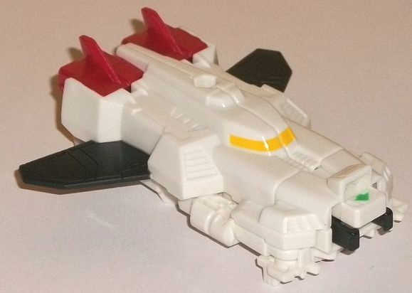
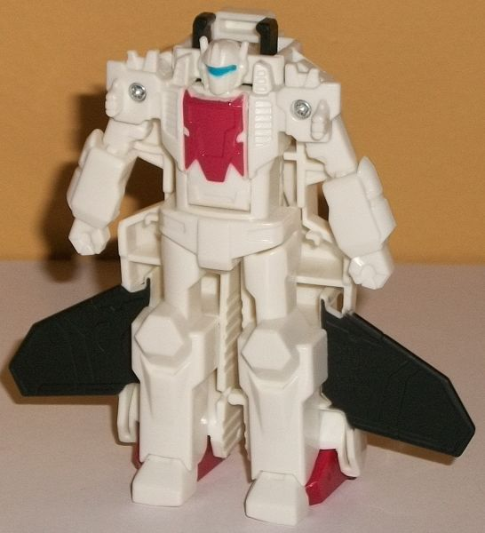
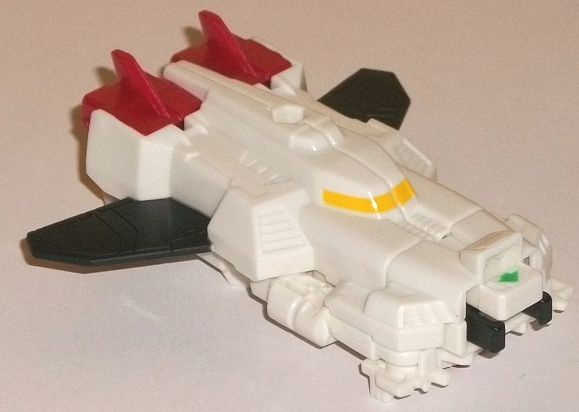
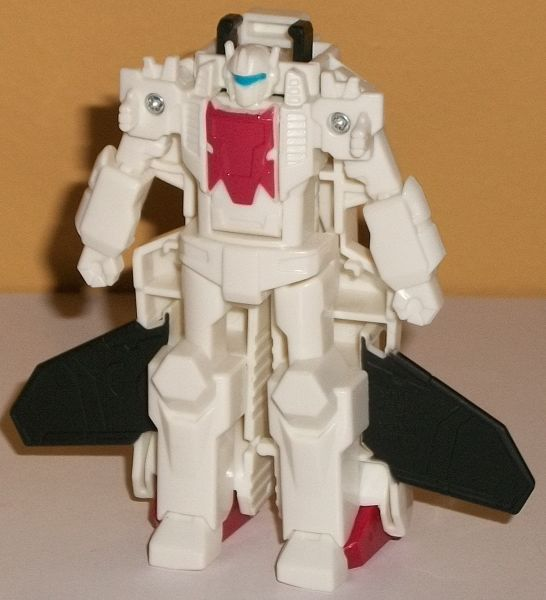
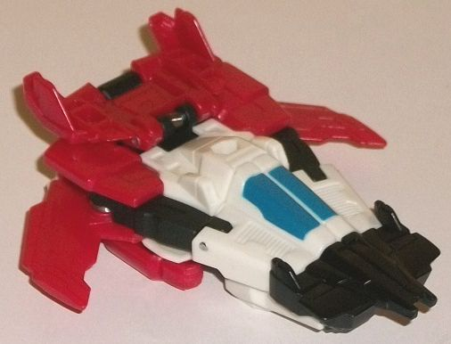
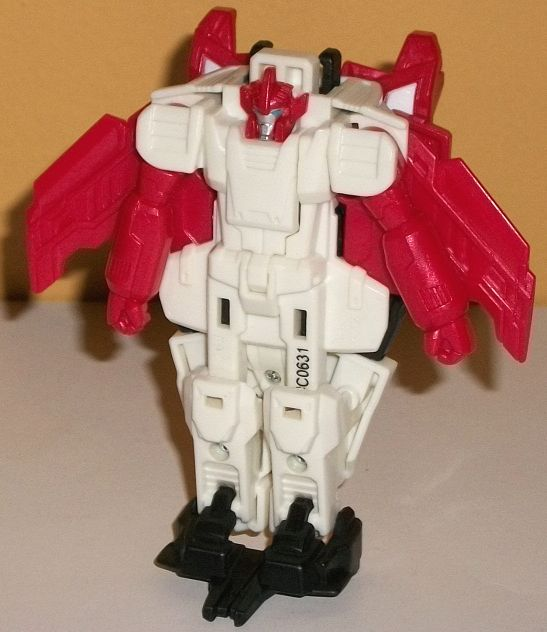
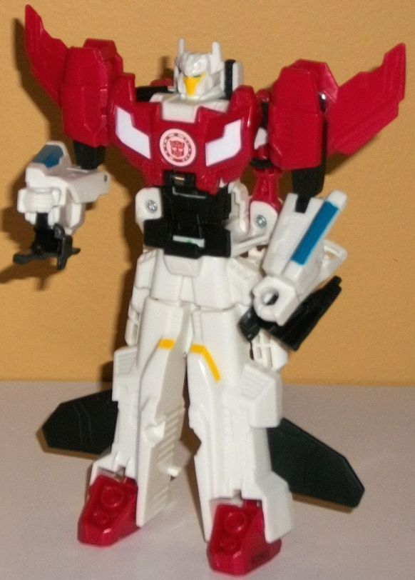

 
Difficulty of Transformation : Very Easy
Color Scheme: White and some black, dull forest green, dark dull glossy red, dark milky red, moderately dull blue, and orangish "cheesy" yellow
Individual Rating : 4.0
Allegiances
: Autobot
Size
: Crash Combiner 2-pack
Overall Rating
: 5.1
 Skysledge
Skysledge


Difficulty of Transformation
: Very
Easy
Color Scheme:
White and some black,
dull forest green, dark dull glossy red, dark milky red, moderately dull
blue, and orangish "cheesy" yellow
Individual Rating
: 4.0
"Skysledge" is certainly
an accurate name for this guy given his alt mode, which is one of the bulkiest
jets I've ever seen. It's very rectangular overall, with a very wide front
(what's a nosecone?) that's kinda ruined by the big combiner port smack
dab in the center, complete with a green arrow showing you how to "crash
combine" Skysledge into his pal Stormhammer. Most of Skysledge's body is
fairly well-detailed in terms of the mold, with vents and the like obvious
on the sides, little tailfins on the top near the rear, and a small cockpit
molded into the center of this bulky flier. His robot arms are a bit obvious
on the front sides of the mode, but color-wise they fit in the surrounding
parts and they don't really break up his silhouette too much, so they're
minor problems. Skysledge's wings are also a bit wide and not as skinny
as you'd expect them to be, so they kinda fit the rest of his silhouette.
There's some nice thrusters detailed on his back end, and Skysledge even
has a port on top of this mode where you can attach a Mini-Con Weaponizer
or other weapon with a similar-sized port into him for some more firepower.
Color-wise the vast majority of Skysledge is white, with some black on
his wings and on part of his combiner clip on the front. There's also some
red plastic used for his thruster/tailfin pieces, and some orangish-yellow
paint on his cockpit windows. It's a very "Aerialbot-y" color scheme, though
whether Skysledge was intended to be an Aerialbot or not I'll never know,
since this group never made it onto the show. That said, some more paint
apps to break up all the white on this mode would've been appreciated.
As with pretty much
every Crash Combiner, the individual transformation is incredibly simple
and just involves swinging out the legs from the sides and separating the
back halves into the legs a bit, then opening up the chest cavity on the
underside, folding out the robot head, and closing it again. As such, Skysledge's
robot mode isn't that impressive to look at-- again, as is the case with
most individual Crash Combiner robot modes. His proportions are a bit too
stiff-looking, and he's got a heck of a lot of kibble-- at this size having
those big wings come out at the sides are a bit too large, though at least
the black paint helps make them "disappear" depending on where you've got
him displayed. The sides of the jet mode also jut out rather obnoxiously
behind his waist and, to a lesser extent, behind his upper legs/chest.
His robot mold detailing is generally fairly generic and not looking like
they came from his jet mode pieces. He's got some general angular details
on his knees, a belt-like collection of shapes on his waist, and generic
arms with fists molded in and tiny little spikes on the backs of the lower
arms. The shoulders have some rather interesting spiky details on them,
though I'm not sure what they're trying to replicate from the vehicle mode,
there. The vents on the sides of his chest and shoulders definitely look
like they carry over from his vehicle mode, though (they don't), and the
detailing on his chest looks like a crumpled-up cockpit from a jet with...
well, with a more normal cockpit. His head looks very much like G1
Jetfire
with his helmet on, with a blue visor, a faceplate, a circular forehead,
and side antennae. Beyond the blue on his visor and some red on that faux
cockpit-chest, Skysledge has no other visible paint beyond the black wings
in this mode-- something he DEFINITELY needed more of with his various
details to break up all this white. As is the case with basically all individual
Crash Combiners, Skysledge can't move much-- just side-to-side at his shoulders.
 Stormhammer
Stormhammer


Difficulty of Transformation
: Very
Easy
Color Scheme:
White, dark milky
red, black, and some dull forest green, silver, and moderately dull blue
Individual Rating
: 4.3
Stormhammer's vehicle
mode is a bit slimmer of a jet than Skysledge, and despite being a bit
more futuristic-looking, is a bit more realistic in its proportions. Now,
given the gimmick, it's still a bit thick down the main body for a jet,
but it's much closer to what one would expect for something like a fighter
spacecraft. The nosecone is still fairly wide, but there's a more clearly-defined
"normal" jet cockpit in the middle of it, with some vents molded on the
side and what looks like the front portion of a sled on the front (should
HE have been called Skysledge instead?) with two small guns jutting out
the front. The back end is mostly a result of his other modes' parts, with
the combined mode chest just flipped upside down with some small tailfins
on it, and the combined mode arms a bit obvious on the sides due to their
black coloration compared to the surrounding parts. The wings point forward
for a bit of a changeup compared to your usual jet. There's some angular
lines on the wings, but beyond those the back is fairly sparsely detailed
mold-wise. For colors, just like Skysledge Stormhammer looks fairly Aerialbot-ish,
with the back end being a dark milky red shade and the rest a mix between
black and white. Despite the fact that the blue cockpit is the only paint
on this entire mode, there's still enough of a color variation on such
a small toy not much else is needed (though perhaps a bit on the wings
would've looked good). Just like with Skysledge, there's a hole on the
top middle of this mode for you to stick a Mini-Con Weaponizer or weapon
with a similarly-sized port into him there for added firepower.
As you'd expect, Stormhammer's
transformation is very straightforward-- flip him upside-down, flip down
the front of the nosecone to become his feet, rotate out the arms a bit,
and then open up the chest cavity, flip out his head, and close it again.
Stormhammer's "core" robot mode is detailed on the underside of his vehicle
mode-- again, as you'd expect for a Crash Combiner individual robot mode--
with some rectangular shoulders and chest markings, an armored waist, skinny
upper legs, and bulkier, curvier lower legs and feet. His arms have some
curved details on the lower arms, but otherwise look pretty average with
molded closed fists. His headsculpt has five little headcrests coming off
of it, with small vents on the side of the head and a "normal" face and
eyes. The head's impressively detailed for the size. Although I'll say
the wings enhance his silhouette a little, otherwise Stormhammer has quite
alot of kibble sticking out the sides of his body-- namely, basically his
entire alt mode. The hips are especially bad and wide, with some substantial
junk to the sides of his main body and a little on the sides of his lower
legs, as well. Behind his head there's the tailfins back there as well
as the Crash Combiner port, complete with the usual green painted arrow
indicating where to combine him with Skysledge. Despite all the robot mode
details, beyond his silver face and blue eyes NONE of it is painted in
this mode, which is a real shame, as it would've helped it stand out from
all that white plastic a lot better. As with basically any individual Crash
Combiner, Stormhammer can only move side-to-side at the shoulders in this
mode; no other articulation.
 Skyhammer
(Combined Form)
Skyhammer
(Combined Form)

Difficulty of Transformation
: Easy
Individual Rating
: 6.9
Their combined form,
Skyhammer, definitely looks like another, larger Aerialbot. As with most
Crash Combiners, the legs are just Skysledge's vehicle mode cut in half
and spread out to form the legs, with feet pieces folded out-- and which
have jet engine exhaust ports molded into them, a nice carry-over from
Skysledge's jet mode. The black wings do definitely stick out from the
sides of the legs, but they don't get in the way (especially given Skyhammer's
limited articulation), and they actually help enhance the silhouette a
bit if you ask me, so I don't mind them. For the top half, the outer portions
of Stormhammer's vehicle mode fold around and down when you connect him
and Skysledge together-- unfold the front nosecone halves down behind the
lower arms and you've got said arms. The nosecone halves on the bottom
of the arms are probably Skyhammer's biggest pieces of kibble and the most
obnoxious, as they neither fit with his silhouette or are minor. They just
kinda... hang there. The main body is formed from the "core" of Stormhammer,
with a new chest panel flipping up and the combined head being revealed.
The combined head looks AWESOME, with pointy side antennae, rather intricate
details on his forehead, a faceplate with divots in it, and vents on the
side-- of course, it incorporates elements from both Stormhammer's and
Skysledge's heads. He also has two narrowed blue eyes, which look great.
The chest panel has some simple angular details on it. The downside with
this transformation is that Stormhammer's individual robot arms are made
a bit clear on the sides of the midsection, which is a minor eyesore. That
said, they only make Skyhammer's midsection a BIT thicker, and color-wise
they fit in with the upper body. Speaking of the colors, Skyhammer's mostly
red-and-black top section meshes well with the mostly white lower section.
The black on the leg-wings actually makes it easier to ignore them if you
don't like them. Most of the paint apps on the legs and arms are taken
from the individual members' respective toys, but there's some white paint
on the angular details on his chest, black paint on his abs, and some yellow
paint on the faceplate. Overall the colors are varied enough for a toy
of this size. Like most Crash Combiners, his articulation is very limited--
he can move back-and-forth at the elbows, but that's it. (You can also
rotate his shoudlers up, but they're spring-loaded and will snap back into
place as soon as you let go of them.)
Overall, the Skyhammer
2-pack is one of the best of the Crash Combiner sets. It still has the
same downsides as basically all of the Crash Combiner sets-- minimal articulation
and robot modes basically just detailed on the underside of the vehicle
modes-- but the combined mode looks incredibly solid. Stormhammer's jet
mode is also pretty solid, while Skysledge's robot mode is at least better-than-average.
Maybe it's because I don't have larger "normal" toys of these guys to compare
them to, but I generally like the individual bot's designs even in miniature,
simplified form, even if I don't like all the kibble around them. The only
reason this isn't my most-recommended Crash Combiner set is because the
Shocknado redeco looks even better color-wise. Still, if you're into these,
this is the first Autobot set I'd recommend.
Review by Beastbot